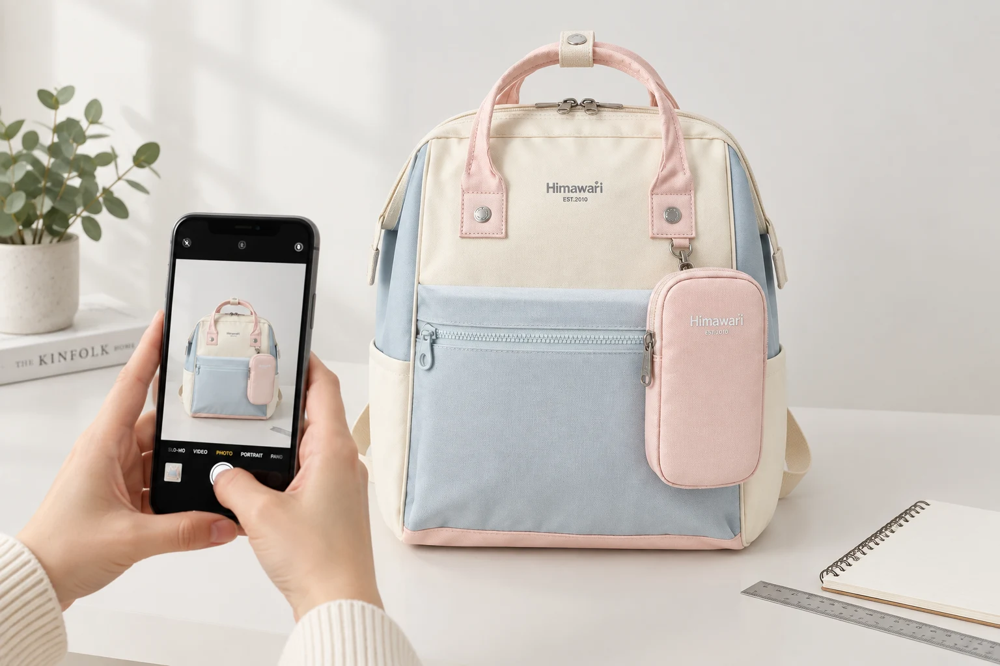

수선 문의 사진은 전체에서 문제 위치로

가방의 한 부분이 벌어졌거나 지퍼가 멈췄을 때 가까운 사진만 보내면 어디에 있는 부분인지 알기 어려울 수 있습니다. 전체 사진에서는 작은 변화가 잘 보이지 않을 수 있습니다. 두 정보를 이어주면 상담하는 사람이 위치를 찾고 현재 상태를 읽을 단서가 생깁니다. 사진을 잘 보이게 만들려고 문제 부위를 더 벌리기보다 발견한 상태를 유지한 채 전체에서 가까운 부분으로 촬영을 준비합니다.
발견한 상태와 이미 한 조치
어떤 현상을 언제 처음 보았는지 적습니다. 고장 원인을 단정하기보다 지금 보이는 변화와 동작을 설명합니다. 내용물의 무게가 문제 부위를 당기고 있다면 안전한 위치에 받치고 제품을 다룰 수 있는 상태를 정합니다. 촬영을 위해 같은 동작을 강하게 반복할 필요는 없습니다. 현재 상태를 남긴 뒤 제품 안내와 문의에서 필요한 조치를 확인할 수 있습니다.
이미 시도한 조치가 있다면 관찰한 현상과 나누어 씁니다. 어느 부품을 움직였는지, 내용물을 빼고 본 상태인지처럼 실제로 한 일을 기록합니다. 하지 않은 동작을 했다고 적거나 원래 모습으로 돌려보이려고 임의로 수선하지 않습니다. 상담 전에 제품 상태가 바뀌었으면 그 시점도 알려줄 수 있습니다. 발견 당시와 지금의 차이가 있으면 담당자가 어느 상태를 보고 있는지 알 수 있습니다.
전체와 주변 구조가 같은 방향으로
첫 사진에는 문제가 있는 쪽의 전체 모습이 나오도록 합니다. 손잡이와 바닥 등 제품을 식별할 부분이 잘리지 않는지 봅니다. 사진과 함께 모델과 옵션을 기록하면 비슷한 외형의 제품을 구분할 단서가 됩니다. 밝고 안정된 자리에서 물건을 받치고 촬영합니다. 개인 소지품과 주소가 적힌 종이가 주변에 있다면 문의 사진에서 불필요하게 노출되지 않도록 정리합니다.
다음 사진은 문제 위치와 주변 구조를 함께 담습니다. 포켓이나 봉제선, 지퍼의 어느 부분인지 알아볼 수 있는 범위를 고릅니다. 손가락으로 가리키며 해당 면을 가리지 않도록 봅니다. 설명에는 ‘앞면을 보는 기준에서 오른쪽 아래’처럼 방향을 붙일 수 있습니다. 전체 사진과 같은 방향으로 찍으면 두 사진을 나란히 볼 때 위치를 대조하기 쉽습니다.
Himawari No.1027을 문의할 때에는 제품 정보의 모델과 실제 사용하는 옵션을 맞추고 개인 사진을 준비합니다. 제품 대표 사진은 모델을 찾는 참고로, 자신의 사진은 현재 상태를 전달하는 자료로 나누어 둡니다. 세트 구성의 부품도 문의 대상에 포함되는지 접수 안내를 봅니다. 어느 물건의 어떤 상태를 말하는지 분명해야 추가 사진이 필요할 때에도 바로 준비할 수 있습니다.

가까운 사진은 초점부터
카메라를 너무 가까이 대기보다 초점이 맞는 거리에서 촬영합니다. 화면에서 확대해 실이나 여밈의 상태가 흐리지 않은지 봅니다. 반사 때문에 가려지는 곳이 있다면 빛이나 각도를 바꾸어 확인합니다. 색이나 모양을 과하게 보정해 실제 상태와 달라지게 만들지 않습니다. 문의할 특징이 읽히는 원래 사진을 남기고 추가 표시가 필요하면 원본과 구별할 수 있습니다.
크기를 설명할 필요가 있으면 자를 가까운 위치에 둘 수 있습니다. 문제 부위를 누르거나 자를 틈 안에 넣어 공간을 키우지 않습니다. 어디의 길이를 말하는지 기준을 설명합니다. 사진의 각도만으로 실제 수치를 만들기보다 직접 읽을 수 있는 항목만 적습니다. 측정이 어려우면 무리하게 값을 채우지 않고 필요한 확인 방법을 담당자에게 물어볼 수 있습니다.
사진 이름이나 순서에 전체, 위치, 가까운 상태를 표시하면 문의 자료를 정리하기 쉽습니다. 비슷한 사진을 많이 보내기보다 각각 다른 역할이 있는지 봅니다. 전체에서 잘 보이는 위치를 가까운 사진으로 이어주고 같은 상태를 말하도록 묶습니다. 다른 날 찍은 사진을 함께 보낼 경우에는 날짜를 구별합니다. 내용물을 넣은 모습과 비운 모습을 비교한다면 그 조건도 함께 쓰면 됩니다.
메모에는 짧은 현상과 접수 정보
구매처와 모델, 확인할 수 있는 구매 시점을 준비하고 담당자가 요청하는 자료를 확인합니다. 공개 게시물에 주문 정보 전체를 붙이기보다 안내된 비공개 문의 경로를 사용할 수 있습니다. 관찰 메모는 구체적인 동작과 결과로 씁니다. 예를 들어 특정 지퍼 부분이 다시 벌어지는 상황을 관찰했다면 어디에서 어떤 조작 중에 보았는지 설명하는 방식입니다. 이 예시는 실제 제품 손상이나 고객 문의를 만들어 제시하는 내용이 아닙니다.
수선 가능 여부와 비용, 소요 기간은 실제 상담 결과를 확인한 뒤 결정합니다. 사진이 준비되었다고 반드시 접수되거나 무상 수선 대상이라고 판단하지 않습니다. 추가 자료 요청이 오면 어떤 사진과 연결되는 질문인지 읽고 현재 상태를 기준으로 답합니다. 발송이 필요하면 그때 받은 구성과 포장 안내를 따릅니다. 문의 준비와 수선 진행의 조건을 각각 확인하면 다음 행동이 분명해집니다.
상담 내용을 받으면 확인한 날짜와 답변, 남은 질문을 개인 기록으로 남길 수 있습니다. 사진을 갱신할 때에도 원래 관찰과 새 상태가 구별되도록 둡니다. 문제가 해결되었다는 판단이 필요하면 담당자의 안내와 실제 제품 상태를 확인합니다. 전체와 문제 위치, 가까운 사진이 하나의 가방을 가리키고 메모가 실제로 본 현상을 말하고 있으면 상담을 시작할 자료가 갖춰집니다.